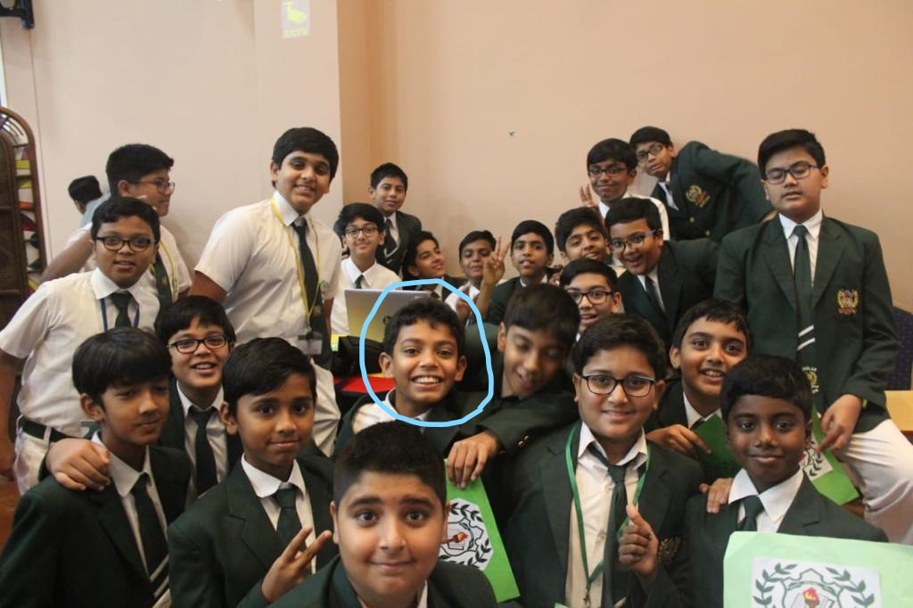

My parents are one of the best in the world. They provide me with almost…mind you... almost everything that I want, which I’m satisfied with. A fact about my dad is that, his name is Rajanikant. Oh my God!! Is your dad really the South Superstar Rajanikant? (sigh). I’ve denied it countless times, it almost behaves like an involuntary reflex action. My dad has had a pretty rough history and has gone through a lot to come at this level. I’ll save this story for another day. My mom’s name is Sangeeta which means music and her actions and care is almost as smooth as that. She’s perceptive and organized with her work and tries to get us to be like that but it doesn’t work out much. What’s ironic about my parents is that they both are actually from Gujarat, but their names are South Indian.
Then we have someone who most of us have and hate to admit that they have the same blood coursing in their veins as we do. Our siblings. I have a rather quirky sister named Pransee. She's in 12th and she's going to be leaving to a university next year. She wants to pursue economics and she's the best sister I could want. I did like to annoy her before, but now that we both are old enough, we enjoy each other's company a lot.
In conclusion, I love my whole family and I enjoy a lot with them. We always have a lot of fun in the weekends. On weekends, me and my family sometimes go out to different places to have fun (COVID-19 really didn't stop us, we started going to new and less crowded places).
That's enough about my family, let's talk about my friends. Most of my friends are from the same school, DPS Sharjah. My best friends, are 2 guys from my class, Faizaan and Sathya. We are chaotic in nature, so that makes us ideal for each other. In 2019 BCE (Before Covid Era), we used to have insane amounts of fun everyday in school, and that is the main reason I despise COVID-19 and want to resume offline school as soon as possible. Talking about our class, we have a huge class with assorted (yes, I just used the word assorted) ranges of students. The class is separated into many groups, but we always come together to fight against injustice. Once, we had school on a Saturday. S A T U R D A Y. So, we decided not to come to school at all. And when the sun rose on Saturday, the teachers only found 3 students in class.
Here's an image of us in 7th grade. I'm the one that's circled.
